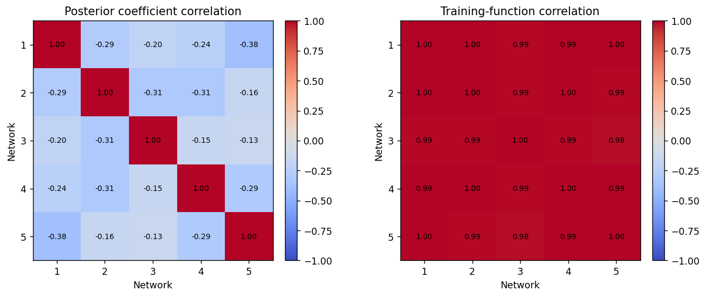
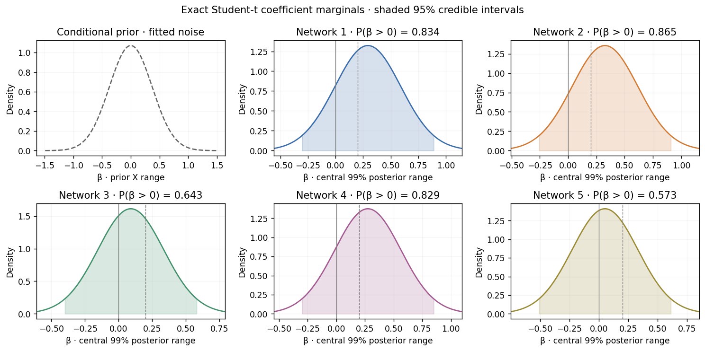
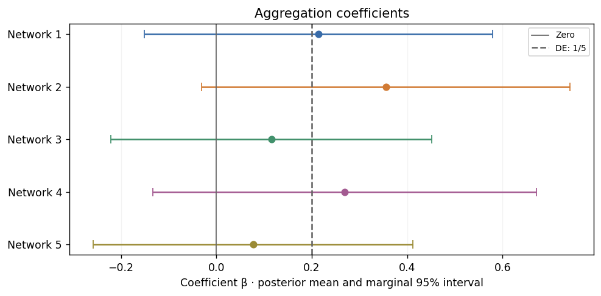
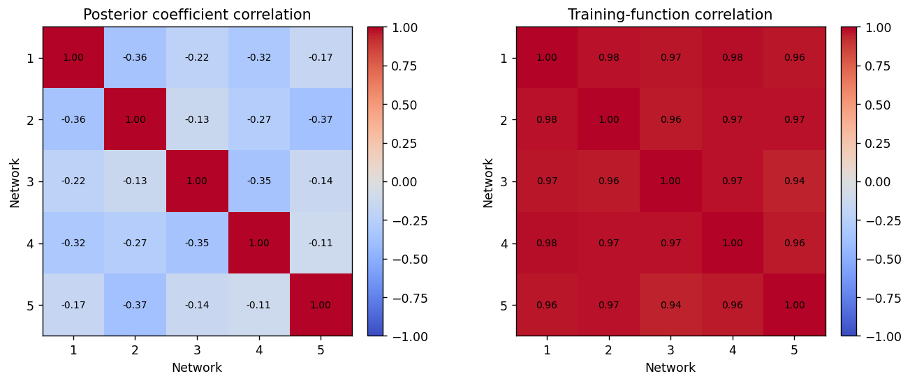
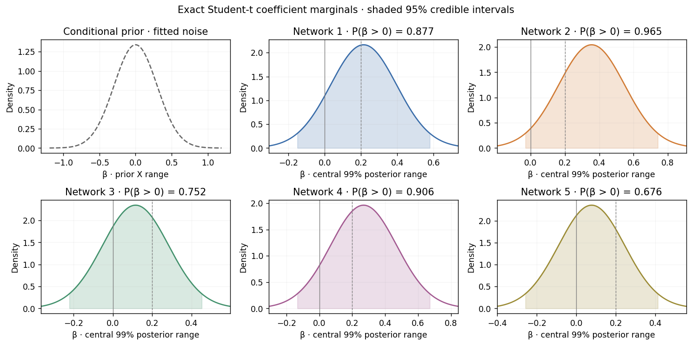
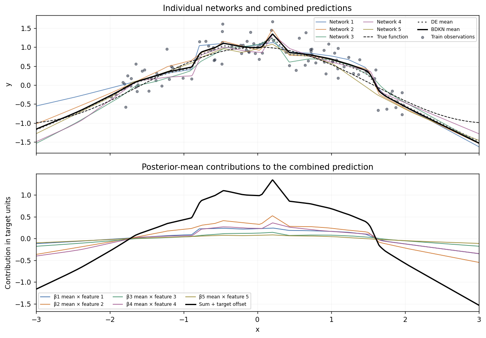
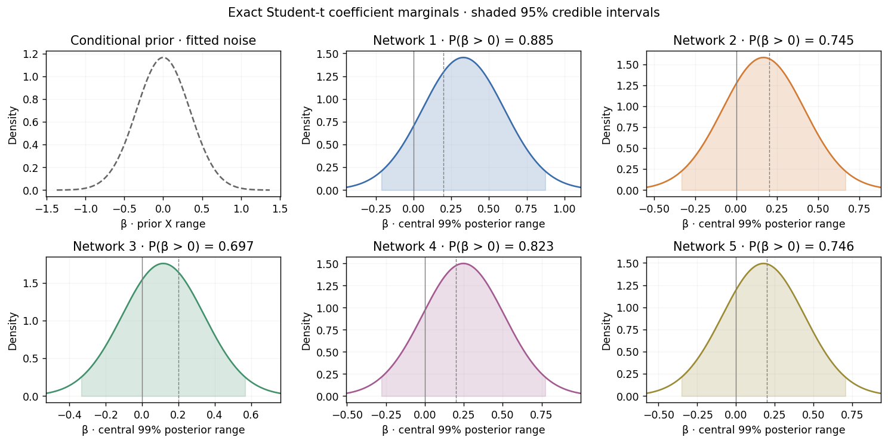
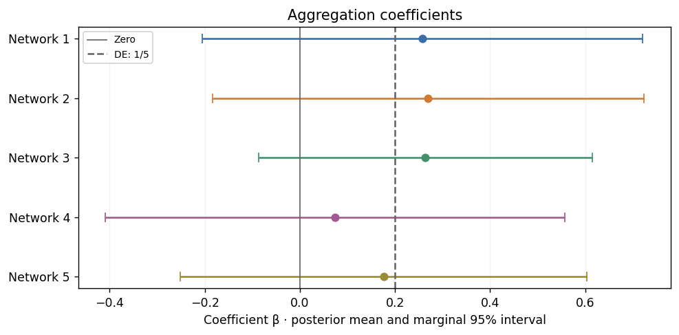
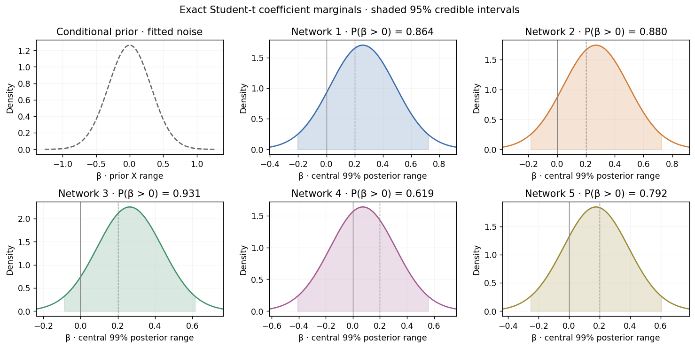
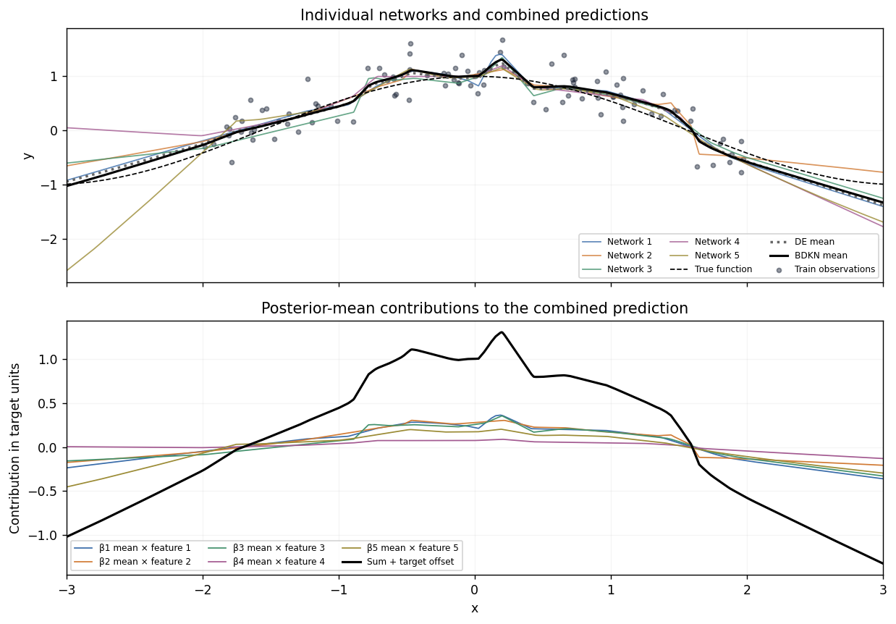

Regression comparison
Download resultsAggregation weights
\widehat y(x)=y_{\rm mean}+y_{\rm std}\sum_{h=1}^{H}\beta_h\mu_h(x)Coefficients can be negative and need not sum to one. Intervals describe coefficient uncertainty; the dashed reference is DE’s fixed 1/H weight.
BDKN




Each density panel uses its own X range for readability; coefficient intervals above share a common axis. Prior reference conditions on fitted noise. Contribution shares use held-out inputs; test targets are used only for scoring.
| Network | β mean | 95% low | 95% high | P(β > 0) | Contribution share | Test RMSE | Test NLL |
|---|---|---|---|---|---|---|---|
| 1 | 0.29299 | -0.30370 | 0.88968 | 0.83384 | 0.29080 | 0.40601 | 2.19498 |
| 2 | 0.32588 | -0.25627 | 0.90802 | 0.86530 | 0.30631 | 0.35829 | 0.97832 |
| 3 | 0.09065 | -0.39933 | 0.58062 | 0.64282 | 0.08804 | 0.33808 | 1.01757 |
| 4 | 0.27580 | -0.29841 | 0.85002 | 0.82854 | 0.26186 | 0.32456 | 1.46765 |
| 5 | 0.05188 | -0.50796 | 0.61171 | 0.57274 | 0.05300 | 0.38945 | 2.51700 |
Functional repulsion · BDKN




Each density panel uses its own X range for readability; coefficient intervals above share a common axis. Prior reference conditions on fitted noise. Contribution shares use held-out inputs; test targets are used only for scoring.
| Network | β mean | 95% low | 95% high | P(β > 0) | Contribution share | Test RMSE | Test NLL |
|---|---|---|---|---|---|---|---|
| 1 | 0.21398 | -0.15059 | 0.57854 | 0.87650 | 0.19902 | 0.39776 | 1.46750 |
| 2 | 0.35547 | -0.03052 | 0.74146 | 0.96467 | 0.35606 | 0.36200 | 0.93690 |
| 3 | 0.11573 | -0.22049 | 0.45195 | 0.75187 | 0.11214 | 0.35391 | 1.38374 |
| 4 | 0.26910 | -0.13304 | 0.67125 | 0.90634 | 0.25880 | 0.34286 | 4.02131 |
| 5 | 0.07719 | -0.25758 | 0.41195 | 0.67583 | 0.07398 | 0.33840 | 1.62900 |
Weight repulsion · BDKN



Each density panel uses its own X range for readability; coefficient intervals above share a common axis. Prior reference conditions on fitted noise. Contribution shares use held-out inputs; test targets are used only for scoring.
| Network | β mean | 95% low | 95% high | P(β > 0) | Contribution share | Test RMSE | Test NLL |
|---|---|---|---|---|---|---|---|
| 1 | 0.33048 | -0.21208 | 0.87303 | 0.88514 | 0.07594 | 1.16285 | 84486.51707 |
| 2 | 0.16639 | -0.33275 | 0.66553 | 0.74505 | 0.19640 | 12.45175 | 22709.46062 |
| 3 | 0.11702 | -0.33251 | 0.56655 | 0.69666 | 0.19323 | 17.66869 | 822086.76487 |
| 4 | 0.24722 | -0.27897 | 0.77342 | 0.82324 | 0.51383 | 20.81108 | 8.60456 |
| 5 | 0.17711 | -0.35139 | 0.70561 | 0.74617 | 0.02060 | 0.48546 | 16806.65046 |
First-order repulsion · BDKN



Each density panel uses its own X range for readability; coefficient intervals above share a common axis. Prior reference conditions on fitted noise. Contribution shares use held-out inputs; test targets are used only for scoring.
| Network | β mean | 95% low | 95% high | P(β > 0) | Contribution share | Test RMSE | Test NLL |
|---|---|---|---|---|---|---|---|
| 1 | 0.25811 | -0.20468 | 0.72091 | 0.86442 | 0.25297 | 0.34967 | 0.83547 |
| 2 | 0.26989 | -0.18394 | 0.72373 | 0.87957 | 0.23249 | 0.35215 | 1.05607 |
| 3 | 0.26398 | -0.08642 | 0.61437 | 0.93092 | 0.23055 | 0.34698 | 0.53387 |
| 4 | 0.07396 | -0.40858 | 0.55650 | 0.61915 | 0.06688 | 0.47672 | 2.66635 |
| 5 | 0.17605 | -0.25189 | 0.60400 | 0.79183 | 0.21711 | 0.49801 | 7.12750 |